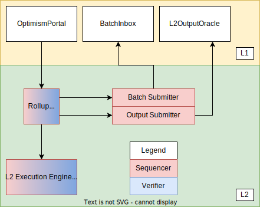
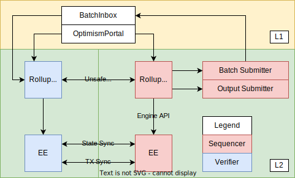
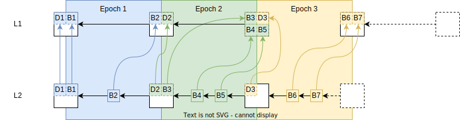
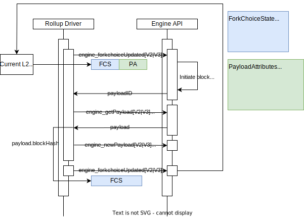

Optimism Overview
Table of Contents
This document is a high-level technical overview of the Optimism protocol. It aims to explain how the protocol works in an informal manner, and direct readers to other parts of the specification so that they may learn more.
This document assumes you've read the introduction.
Architecture Design Goals
- Execution-Level EVM Equivalence: The developer experience should be identical to L1 except where L2 introduces a
fundamental difference.
- No special compiler.
- No unexpected gas costs.
- Transaction traces work out-of-the-box.
- All existing Ethereum tooling works - all you have to do is change the chain ID.
- Maximal compatibility with ETH1 nodes: The implementation should minimize any differences with a vanilla Geth
node, and leverage as many existing L1 standards as possible.
- The execution engine/rollup node uses the ETH2 Engine API to build the canonical L2 chain.
- The execution engine leverages Geth's existing mempool and sync implementations, including snap sync.
- Minimize state and complexity:
- Whenever possible, services contributing to the rollup infrastructure are stateless.
- Stateful services can recover to full operation from a fresh DB using the peer-to-peer network and on-chain sync mechanisms.
- Running a replica is as simple as running a Geth node.
Components

L1 Components
-
OptimismPortal: A feed of L2 transactions which originated as smart contract calls in the L1 state.
- The
OptimismPortalcontract emitsTransactionDepositedevents, which the rollup driver reads in order to process deposits. - Deposits are guaranteed to be reflected in the L2 state within the sequencing window.
- Beware that transactions are deposited, not tokens. However deposited transactions are a key part of implementing token deposits (tokens are locked on L1, then minted on L2 via a deposited transaction).
- The
-
BatchInbox: An L1 address to which the Batch Submitter submits transaction batches.
- Transaction batches include L2 transaction calldata, timestamps, and ordering information.
- The BatchInbox is a regular EOA address. This lets us pass on gas cost savings by not executing any EVM code.
-
L2OutputOracle: A smart contract that stores L2 output roots for use with withdrawals and fault proofs.
L2 Components
- Rollup Node:
- A standalone, stateless binary.
- Receives L2 transactions from users.
- Syncs and verifies rollup data on L1.
- Applies rollup-specific block production rules to synthesize blocks from L1.
- Appends blocks to the L2 chain using the Engine API.
- Handles L1 reorgs.
- Distributes unsubmitted blocks to other rollup nodes.
- Execution Engine (EE):
- A vanilla Geth node with minor modifications to support Optimism.
- Maintains L2 state.
- Sync state to other L2 nodes for fast onboarding.
- Serves the Engine API to the rollup node.
- Batch Submitter
- A background process that submits transaction batches to the
BatchInboxaddress.
- A background process that submits transaction batches to the
- Output Submitter
- A background process that submits L2 output commitments to the
L2OutputOracle.
- A background process that submits L2 output commitments to the
Transaction/Block Propagation
Spec links:
Since the EE uses Geth under the hood, Optimism uses Geth's built-in peer-to-peer network and transaction pool to propagate transactions. The same network can also be used to propagate submitted blocks and support snap-sync.
Unsubmitted blocks, however, are propagated using a separate peer-to-peer network of Rollup Nodes. This is optional, however, and is provided as a convenience to lower latency for verifiers and their JSON-RPC clients.
The below diagram illustrates how the sequencer and verifiers fit together:

Key Interactions In Depth
Deposits
Spec links:
Optimism supports two types of deposits: user deposits, and L1 attributes deposits. To perform a user deposit, users
call the depositTransaction method on the OptimismPortal contract. This in turn emits TransactionDeposited events,
which the rollup node reads during block derivation.
L1 attributes deposits are used to register L1 block attributes (number, timestamp, etc.) on L2 via a call to the L1 Attributes Predeploy. They cannot be initiated by users, and are instead added to L2 blocks automatically by the rollup node.
Both deposit types are represented by a single custom EIP-2718 transaction type on L2.
Block Derivation
Overview
The rollup chain can be deterministically derived given an L1 Ethereum chain. The fact that the entire rollup chain can be derived based on L1 blocks is what makes Optimism a rollup. This process can be represented as:
derive_rollup_chain(l1_blockchain) -> rollup_blockchain
Optimism's block derivation function is designed such that it:
- Requires no state other than what is easily accessible using L1 and L2 execution engine APIs.
- Supports sequencers and sequencer consensus.
- Is resilient to sequencer censorship.
Epochs and the Sequencing Window
The rollup chain is subdivided into epochs. There is a 1:1 correspondence between L1 block numbers and epoch numbers.
For L1 block number n, there is a corresponding rollup epoch n which can only be derived after a sequencing window
worth of blocks has passed, i.e. after L1 block number n + SEQUENCING_WINDOW_SIZE is added to the L1 chain.
Each epoch contains at least one block. Every block in the epoch contains an L1 info transaction which contains
contextual information about L1 such as the block hash and timestamp. The first block in the epoch also contains all
deposits initiated via the OptimismPortal contract on L1. All L2 blocks can also contain sequenced transactions,
i.e. transactions submitted directly to the sequencer.
Whenever the sequencer creates a new L2 block for a given epoch, it must submit it to L1 as part of a batch, within
the epoch's sequencing window (i.e. the batch must land before L1 block n + SEQUENCING_WINDOW_SIZE). These batches are
(along with the TransactionDeposited L1 events) what allows the derivation of the L2 chain from the L1 chain.
The sequencer does not need for a L2 block to be batch-submitted to L1 in order to build on top of it. In fact, batches typically contain multiple L2 blocks worth of sequenced transactions. This is what enables fast transaction confirmations on the sequencer.
Since transaction batches for a given epoch can be submitted anywhere within the sequencing window, verifiers must search all blocks within the window for transaction batches. This protects against the uncertainty of transaction inclusion of L1. This uncertainty is also why we need the sequencing window in the first place: otherwise the sequencer could retroactively add blocks to an old epoch, and validators wouldn't know when they can finalize an epoch.
The sequencing window also prevents censorship by the sequencer: deposits made on a given L1 block will be included in
the L2 chain at worst after SEQUENCING_WINDOW_SIZE L1 blocks have passed.
The following diagram describes this relationship, and how L2 blocks are derived from L1 blocks (L1 info transactions have been elided):

Block Derivation Loop
A sub-component of the rollup node called the rollup driver is actually responsible for performing block derivation. The rollup driver is essentially an infinite loop that runs the block derivation function. For each epoch, the block derivation function performs the following steps:
- Downloads deposit and transaction batch data for each block in the sequencing window.
- Converts the deposit and transaction batch data into payload attributes for the Engine API.
- Submits the payload attributes to the Engine API, where they are converted into blocks and added to the canonical chain.
This process is then repeated with incrementing epochs until the tip of L1 is reached.
Engine API
The rollup driver doesn't actually create blocks. Instead, it directs the execution engine to do so via the Engine API. For each iteration of the block derivation loop described above, the rollup driver will craft a payload attributes object and send it to the execution engine. The execution engine will then convert the payload attributes object into a block, and add it to the chain. The basic sequence of the rollup driver is as follows:
- Call fork choice updated with the payload attributes object. We'll skip over the details of the
fork choice state parameter for now - just know that one of its fields is the L2 chain's
headBlockHash, and that it is set to the block hash of the tip of the L2 chain. The Engine API returns a payload ID. - Call get payload with the payload ID returned in step 1. The engine API returns a payload object that includes a block hash as one of its fields.
- Call new payload with the payload returned in step 2. (Ectone blocks, must use V3, pre-Ecotone blocks MUST use the V2 version)
- Call fork choice updated with the fork choice parameter's
headBlockHashset to the block hash returned in step 2. The tip of the L2 chain is now the block created in step 1.
The swimlane diagram below visualizes the process:
